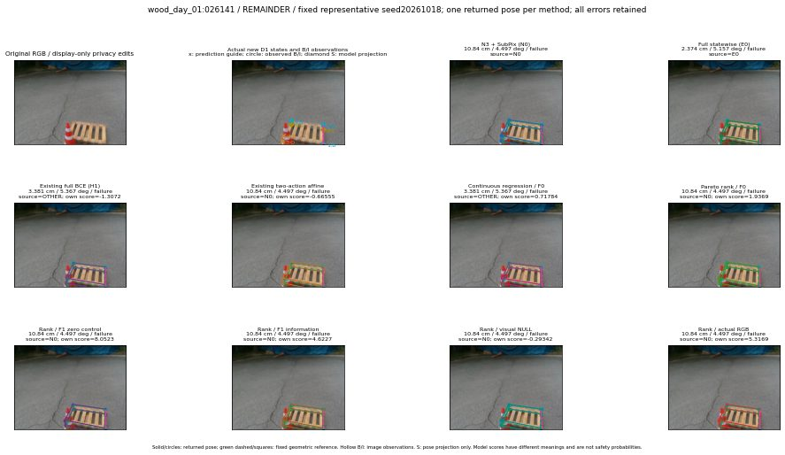

실선은 반환 자세, 초록 점선은 고정 기하 참조입니다. S는 영상 관측이 아닙니다. 점수는 모델별 의미가 다르며 보정된 안전 확률이 아닙니다. 개인정보 처리는 표시 사본에만 적용했습니다.
| 방법·seed | 위치 / 회전 / 공동성공 | 실제 출처 | 선택 후보 | 각 모델 자체 점수 |
|---|---|---|---|---|
| N0 | 10.84 cm / 4.497 deg / failure | N0 | N/A | N/A |
| E0 | 2.374 cm / 5.157 deg / failure | E0 | N/A | N/A |
| E0_REGENERATED | 2.374 cm / 5.157 deg / failure | E0 | E0_REGENERATED | N/A |
| POSEFIX_SUBPIX_PF_ANCHOR | 11.25 cm / 3.95 deg / failure | OTHER | N/A | N/A |
| POSEFIX_SUBPIX_YOLO_ANCHOR | 11.25 cm / 3.95 deg / failure | OTHER | N/A | N/A |
| D1_H1_MLP_s20261018 | 3.381 cm / 5.367 deg / failure | OTHER | WD0/ORIGINAL_WD/sample/6 | -1.3072212934494019 |
| D1_H1_MLP_s20261019 | 3.381 cm / 5.367 deg / failure | OTHER | WD0/ORIGINAL_WD/sample/6 | -1.4029799699783325 |
| D1_H1_MLP_s20261020 | 3.381 cm / 5.367 deg / failure | OTHER | WD0/ORIGINAL_WD/sample/6 | -1.448235034942627 |
| D1_H1_PAIR_MLP_s20261018 | 2.374 cm / 5.157 deg / failure | E0 | E0_REGENERATED | -1.3188753128051758 |
| D1_H1_PAIR_MLP_s20261019 | 2.374 cm / 5.157 deg / failure | E0 | E0_REGENERATED | -1.561789870262146 |
| D1_H1_PAIR_MLP_s20261020 | 2.374 cm / 5.157 deg / failure | E0 | E0_REGENERATED | -1.74537992477417 |
| D1_H1_PAIR_ROLE_AFFINE_s20261018 | 10.84 cm / 4.497 deg / failure | N0 | N0 | -0.6655516028404236 |
| D1_H1_PAIR_ROLE_AFFINE_s20261019 | 10.84 cm / 4.497 deg / failure | N0 | N0 | -0.840633749961853 |
| D1_H1_PAIR_ROLE_AFFINE_s20261020 | 10.84 cm / 4.497 deg / failure | N0 | N0 | -0.6309555172920227 |
| R_CONT_F0_s20261018 | 3.381 cm / 5.367 deg / failure | OTHER | WD0/ORIGINAL_WD/sample/6 | 0.7178419828414917 |
| R_CONT_F0_s20261019 | 3.381 cm / 5.367 deg / failure | OTHER | WD0/ORIGINAL_WD/sample/6 | 0.8108529448509216 |
| R_CONT_F0_s20261020 | 3.381 cm / 5.367 deg / failure | OTHER | WD0/ORIGINAL_WD/sample/6 | 0.93721604347229 |
| R_ORDER_F0_s20261018 | 10.84 cm / 4.497 deg / failure | N0 | N0 | 1.9368586540222168 |
| R_ORDER_F0_s20261019 | 4.773 cm / 7.896 deg / failure | OTHER | WD0/ORIGINAL_WD/sample/2 | -2.093630790710449 |
| R_ORDER_F0_s20261020 | 10.84 cm / 4.497 deg / failure | N0 | N0 | -6.343453407287598 |
| R_ORDER_F1_ZERO_s20261018 | 10.84 cm / 4.497 deg / failure | N0 | N0 | 8.05228328704834 |
| R_ORDER_F1_ZERO_s20261019 | 10.84 cm / 4.497 deg / failure | N0 | N0 | -7.169241905212402 |
| R_ORDER_F1_ZERO_s20261020 | 10.84 cm / 4.497 deg / failure | N0 | N0 | 0.8510167598724365 |
| R_ORDER_F1_s20261018 | 10.84 cm / 4.497 deg / failure | N0 | N0 | 4.622704982757568 |
| R_ORDER_F1_s20261019 | 10.84 cm / 4.497 deg / failure | N0 | N0 | 4.329440593719482 |
| R_ORDER_F1_s20261020 | 10.84 cm / 4.497 deg / failure | N0 | N0 | 2.980210781097412 |
| V_ORDER_NULL_s20261018 | 10.84 cm / 4.497 deg / failure | N0 | N0 | -0.2934219241142273 |
| V_ORDER_NULL_s20261019 | 10.84 cm / 4.497 deg / failure | N0 | N0 | -0.4855065643787384 |
| V_ORDER_NULL_s20261020 | 10.84 cm / 4.497 deg / failure | N0 | N0 | 2.804565668106079 |
| V_ORDER_RGB_s20261018 | 10.84 cm / 4.497 deg / failure | N0 | N0 | 5.316895484924316 |
| V_ORDER_RGB_s20261019 | 10.84 cm / 4.497 deg / failure | N0 | N0 | 0.3398561477661133 |
| V_ORDER_RGB_s20261020 | 10.84 cm / 4.497 deg / failure | N0 | N0 | -5.806331634521484 |